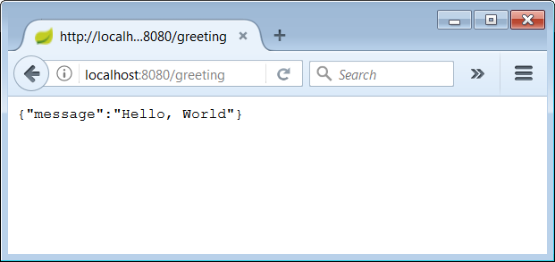

This is a comprehensive tutorial that explains how to automate the load tests of a Spring Boot based RESTful Web Service using Gatling together with Gradle.
You will learn how to combine all the above tools and automate the load testing by defining tasks which can become part of a CI/CD build pipeline.
If you are not familiar with these tools, don’t worry. This tutorial will explain in details all the steps needed to start with all tools from scratch.
Here is an outline of the various steps you will follow in the tutorial:
For developers that are already familiar with all three tools, perhaps the most interesting part in this tutorial is the part that explains how to Setup Gradle to automate the Gatling load tests. If you have a Spring Boot web service, Gradle build tasks and Gatling simulation scenarios for the load tests already setup, then you could skip the first three parts and jump directly to the fourth step.
What this tutorial will not do, is to explain in detail what is happening under the hood for each of the tools. If you are interested in understanding each tool in depth, there are other tutorials to help you. For example for Gatling:
• Gatling quickstart
• Gatling Advanced Tutorial
for Gradle:
• Creating New Gradle Builds
• Building Java Applications
• Java Quickstart
and for Spring Boot:
• Building a RESTful Web Service Tutorial
• Building an Application with Spring Boot
Before you start, you need to make sure you have Gradle already installed on your system. You can find the installation manual here.
You also need to have JDK 1.8 or later installed on your system.
You can get the complete source code from the git repository:
git clone https://bitbucket.org/apostolosbenisis/tutorial-gatling.git
To begin with, create a new folder named tutorial-gatling and create an empty build.gradle file:
mkdir tutorial-gatling cd tutorial-gatling type nul>build.gradle |
Note: In this tutorial, shell commands are for the Windows operating system. For Unix-based systems it should be easy to find the analogous commands.
In the next steps you will gradually fill the build.gradle file with the appropriate code.
For building the Spring Boot web service, you will follow a similar path as the one presented in the Building a RESTful Web Service Tutorial.
You will build a simple RESTful web service that will accept a HTTP GET request and will respond with a JSON string representing the typical hello world greeting.
Let’s start by creating the typical java directory structure bellow the tutorial-gatling directory:
cd tutorial-gatlingmkdir src\main\java\webservice |
The directory structure bellow tutorial-gatling now looks like this:
tutorial-gatling└── src └── main └── java └── webservice |
The src\main\java\webservicedirectory is used for the java code of the web service.
In a previous step you created the build.gradle file. Now you will add the code to build the web service. Using your favorite editor, open the build.gradle file and add the following code:
buildscript { repositories { mavenCentral() } dependencies { classpath 'org.springframework.boot:spring-boot-gradle-plugin:1.5.6.RELEASE' }}apply plugin: 'java'apply plugin: 'org.springframework.boot'jar { baseName = 'webservice' version = '0.1.0'}repositories { mavenCentral()}sourceCompatibility = 1.8targetCompatibility = 1.8dependencies { compile('org.springframework.boot:spring-boot-starter-web')} |
Using your favorite editor, create the file Application.javain the webservice directory (src\main\java\webservice\Application.java) and add the following code:
package webservice;import org.springframework.boot.SpringApplication;import org.springframework.boot.autoconfigure.SpringBootApplication;@SpringBootApplicationpublic class Application { public static void main(String[] args) { SpringApplication.run(Application.class, args); }} |
You can read how to bootstrap and launch a Spring application here.
You can read more about the @SpringBootApplication annotation here.
The web service you are building will handle GET requests at the endpoint /greeting
and will respond with a 200 OK status and a JSON in the body, that represents a greeting. The JSON will look like this:
{"message": "Hello, World"}
You will use a POJO to model the greeting.
First, create a model directory bellow the webservice directory.
Then, using your favorite editor, create the file Greeting.java in the new directory (src\main\java\webservice\model\Greeting.java) and add the following code:
package webservice.model;public class Greeting { private final String message; public Greeting(String message) { this.message = message; } public String getMessage() { return message; }} |
In a the next step you will see how this object is automatically marshaled to JSON and added to the body of the HTTP GET response, seamlessly by the spring framework.
First, create a web directory bellow the webservice directory.
Then, using your favorite editor, create the file GreetingController.javain the new directory (src\main\java\webservice\web\GreetingController.java) and add the following code:
package webservice.web;import webservice.model.Greeting;import org.springframework.web.bind.annotation.RequestMapping;import org.springframework.web.bind.annotation.RestController;@RestControllerpublic class GreetingController { @RequestMapping("/greeting") public Greeting greeting() { return new Greeting("Hello, World"); }} |
You can read more about the @RestController annotation here and here.
At this point the web service is completed and you can now build it and launch it. You have set up Gradle to use the Spring Boot Gradle plugin. This plugin offers many convenient methods for building the executing the Spring Boot web service.
Launch the web service by the executing the command gradlew bootRun. Gradle will now download all dependencies and then start the Spring Boot web service. Wait some time until the web services is up and running.
:compileJavaDownload https://repo1.maven.org/maven2/com/fasterxml/jackson/core/jackson-core/2.8.9/jackson-core-2.8.9.pomDownload https://repo1.maven.org/maven2/org/slf4j/log4j-over-slf4j/1.7.25/log4j-over-slf4j-1.7.25.pomDownload https://repo1.maven.org/maven2/com/fasterxml/jackson/core/jackson-core/2.8.9/jackson-core-2.8.9.jarDownload https://repo1.maven.org/maven2/org/slf4j/log4j-over-slf4j/1.7.25/log4j-over-slf4j-1.7.25.jar:processResources UP-TO-DATE:classes:findMainClass:bootRun . ____ _ __ _ _ /\\ / ___'_ __ _ _(_)_ __ __ _ \ \ \ \( ( )\___ | '_ | '_| | '_ \/ _` | \ \ \ \ \\/ ___)| |_)| | | | | || (_| | ) ) ) ) ' |____| .__|_| |_|_| |_\__, | / / / / =========|_|==============|___/=/_/_/_/ :: Spring Boot :: (v1.5.6.RELEASE)2017-09-11 19:46:45.095 INFO 9376 --- [ main] webservice.Application : Starting Application on UP with PID 9376 (D:\Projects\tutorial-gatling\build\classes\main started by Apostolos Benisis in D:\Projects\tutorial-gatling)2017-09-11 19:46:45.098 INFO 9376 --- [ main] webservice.Application : No active profile set, falling back to default profiles: default2017-09-11 19:46:45.142 INFO 9376 --- [ main] ationConfigEmbeddedWebApplicationContext : Refreshing org.springframework.boot.context.embedded.AnnotationConfigEmbeddedWebApplicationContext@4a7dd4: startup date [Mon Sep 11 19:46:45 CEST 2017]; root of context hierarchy2017-09-11 19:46:46.330 INFO 9376 --- [ main] s.b.c.e.t.TomcatEmbeddedServletContainer : Tomcat initialized with port(s): 8080 (http)2017-09-11 19:46:46.340 INFO 9376 --- [ main] o.apache.catalina.core.StandardService : Starting service [Tomcat]2017-09-11 19:46:46.341 INFO 9376 --- [ main] org.apache.catalina.core.StandardEngine : Starting Servlet Engine: Apache Tomcat/8.5.162017-09-11 19:46:46.427 INFO 9376 --- [ost-startStop-1] o.a.c.c.C.[Tomcat].[localhost].[/] : Initializing Spring embedded WebApplicationContext2017-09-11 19:46:46.427 INFO 9376 --- [ost-startStop-1] o.s.web.context.ContextLoader : Root WebApplicationContext: initialization completed in 1287 ms2017-09-11 19:46:46.538 INFO 9376 --- [ost-startStop-1] o.s.b.w.servlet.ServletRegistrationBean : Mapping servlet: 'dispatcherServlet' to [/]2017-09-11 19:46:46.541 INFO 9376 --- [ost-startStop-1] o.s.b.w.servlet.FilterRegistrationBean : Mapping filter: 'characterEncodingFilter' to: [/*]2017-09-11 19:46:46.542 INFO 9376 --- [ost-startStop-1] o.s.b.w.servlet.FilterRegistrationBean : Mapping filter: 'hiddenHttpMethodFilter' to: [/*]2017-09-11 19:46:46.542 INFO 9376 --- [ost-startStop-1] o.s.b.w.servlet.FilterRegistrationBean : Mapping filter: 'httpPutFormContentFilter' to: [/*]2017-09-11 19:46:46.542 INFO 9376 --- [ost-startStop-1] o.s.b.w.servlet.FilterRegistrationBean : Mapping filter: 'requestContextFilter' to: [/*]2017-09-11 19:46:46.784 INFO 9376 --- [ main] s.w.s.m.m.a.RequestMappingHandlerAdapter : Looking for @ControllerAdvice: org.springframework.boot.context.embedded.AnnotationConfigEmbeddedWebApplicationContext@4a7dd4: startup date [Mon Sep 11 19:46:45 CEST 2017]; root of context hierarchy2017-09-11 19:46:46.839 INFO 9376 --- [ main] s.w.s.m.m.a.RequestMappingHandlerMapping : Mapped "{[/greeting]}" onto public webservice.model.Greeting webservice.web.GreetingController.greeting()2017-09-11 19:46:46.841 INFO 9376 --- [ main] s.w.s.m.m.a.RequestMappingHandlerMapping : Mapped "{[/error]}" onto public org.springframework.http.ResponseEntity<java.util.Map<java.lang.String, java.lang.Object>> org.springframework.boot.autoconfigure.web.BasicErrorController.error(javax.servlet.http.HttpServletRequest)2017-09-11 19:46:46.842 INFO 9376 --- [ main] s.w.s.m.m.a.RequestMappingHandlerMapping : Mapped "{[/error],produces=}" onto public org.springframework.web.servlet.ModelAndView org.springframework.boot.autoconfigure.web.BasicErrorController.errorHtml(javax.servlet.http.HttpServletRequest,javax.servlet.http.HttpServletResponse)2017-09-11 19:46:46.863 INFO 9376 --- [ main] o.s.w.s.handler.SimpleUrlHandlerMapping : Mapped URL path [/webjars/**] onto handler of type [class org.springframework.web.servlet.resource.ResourceHttpRequestHandler]2017-09-11 19:46:46.863 INFO 9376 --- [ main] o.s.w.s.handler.SimpleUrlHandlerMapping : Mapped URL path [/**] onto handler of type [class org.springframework.web.servlet.resource.ResourceHttpRequestHandler]2017-09-11 19:46:46.894 INFO 9376 --- [ main] o.s.w.s.handler.SimpleUrlHandlerMapping : Mapped URL path [/**/favicon.ico] onto handler of type [class org.springframework.web.servlet.resource.ResourceHttpRequestHandler]2017-09-11 19:46:47.008 INFO 9376 --- [ main] o.s.j.e.a.AnnotationMBeanExporter : Registering beans for JMX exposure on startup2017-09-11 19:46:47.051 INFO 9376 --- [ main] s.b.c.e.t.TomcatEmbeddedServletContainer : Tomcat started on port(s): 8080 (http)2017-09-11 19:46:47.054 INFO 9376 --- [ main] webservice.Application : Started Application in 2.217 seconds (JVM running for 2.492)> Building 83% > :bootRun |
Alternately, you can use the command gradlew build to build and assemble all dependencies and the compiled classes in a single, runnable “über-jar” jar file. The jar file can then be executed with java -jar build/libs/webservice-0.1.0.jar.jar
Note: All Gradle commands must executed from the tutorial-gatling directory where the build.gradle file is located.
Now, open in a browser the url http://localhost:8080/greeting
You should now see in the browser the greeting in JSON format.

Note: Instead of opening a browser, you can run curl http://localhost:8080/greeting from the command prompt. The windows operating system does not come with curl, so you have to download it from here and install it on your system. If you have Git already installed on your system, just open a Git bash and run the curl command. It is already included with the Git distribution.
Gatling is a load and performance testing tool. You will now learn how to create a scenario and run a simulation to load test the web service you created in the previous steps.
You will add Gatling as a dependency in the Gradle build.gradle file and let Gradle download all required files.
Since you don’t want to distribute Gatling together with the production artifacts, you will add it as a testCompile dependency.
Note: You can find more information on the dependency types of the java plugin here.
Edit the build.gradle file and add the line testCompile('io.gatling.highcharts:gatling-charts-highcharts:2.3.0') in the dependencies section, towards the end of the file.
The Gatling simulation scenarios are written in Scala code. To compile the Scala code you will add apply plugin: 'scala' next to the other plugin entries.
The file should look like this:
.........apply plugin: 'java'apply plugin: 'org.springframework.boot'apply plugin: 'scala'.........dependencies { compile('org.springframework.boot:spring-boot-starter-web') testCompile('io.gatling.highcharts:gatling-charts-highcharts:2.3.0')} |
Note: Gatling offers a manual installation with a zip bundle. If you want to run Gatling manually from the command prompt, you should additionally follow the zip file based installation described in the quickstart guide
First, create the directory structure bellow the tutorial-gatling directory for storing the Gatling simulation scenario. In the command prompt go to the tutorial-gatling directory and then run:
mkdir src\test\scala\webservice\gatling\simulationmkdir src\test\resources |
The directory structure bellow tutorial-gatling now looks like this:
tutorial-gatling└── src ├── main | └── java | └── webservice └── test ├── scala | └── webservice | └── gatling | └── simulation └── resources |
The web service you created in the previous steps has a single and very simple end point (http://localhost:8080/greeting). In the next step you will create a simple test scenario to test the performance of the web service when it is actually consumed. In details it will do the following:
testTimeSecs = 20).http://localhost:8080/greeting and expects a response with the status 200 OK.minWaitMs = 1000 millisecons maxWaitMs = 3000 milliseconds).noOfUsers = 10).rampUpTimeSecs = 5) to ramp up the number of users from 0 to 10.Using your favorite editor, create the file WebServiceCallSimulation.scala in the new directory (src\test\scala\webservice\gatling\simulation\WebServiceCallSimulation.scala) and add the following code:
package webservice.gatling.simulationimport io.gatling.core.Predef._import io.gatling.http.Predef._import scala.concurrent.duration._class WebServiceCallSimulation extends Simulation { val rampUpTimeSecs = 5 val testTimeSecs = 20 val noOfUsers = 10 val minWaitMs = 1000 milliseconds val maxWaitMs = 3000 milliseconds val baseName = "webservice-call-greeting" val requestName = baseName + "-request" val scenarioName = baseName + "-scenario" val URI = "/greeting" val httpConf = http .baseURL(baseURL) .acceptHeader("text/html,application/xhtml+xml,application/xml;q=0.9,*/*;q=0.8") // 6 .doNotTrackHeader("1") .acceptLanguageHeader("en-US,en;q=0.5") .acceptEncodingHeader("gzip, deflate") .userAgentHeader("Mozilla/5.0 (Windows NT 5.1; rv:31.0) Gecko/20100101 Firefox/31.0") val scn = scenario(scenarioName) .during(testTimeSecs) { exec( http(requestName) .get(URI) .check(status.is(200)) ).pause(minWaitMs, maxWaitMs) } setUp( scn.inject(rampUsers(noOfUsers) over (rampUpTimeSecs)) ).protocols(httpConf) } |
Note:You can find more information on user agent header string here.
Next you will configure the logging level for Gatling to make it less verbose. Gatling uses Logback.
Using your favorite editor, create the file logback-gatling.xml in the src\test\resources directory (src\test\resources\logback-gatling.xml) and add the following code:
<?xml version="1.0" encoding="UTF-8"?><configuration> <appender name="CONSOLE" class="ch.qos.logback.core.ConsoleAppender"> <encoder> <pattern>%d{HH:mm:ss.SSS} [%-5level] %logger{15} - %msg%n%rEx</pattern> <immediateFlush>false</immediateFlush> </encoder> </appender> <!-- Uncomment for logging ALL HTTP request and responses --> <!-- <logger name="io.gatling.http.ahc" level="TRACE" /> --> <!-- <logger name="io.gatling.http.response" level="TRACE" /> --> <!-- Uncomment for logging ONLY FAILED HTTP request and responses --> <!-- <logger name="io.gatling.http.ahc" level="DEBUG" /> --> <!-- <logger name="io.gatling.http.response" level="DEBUG" /> --> <root level="ERROR"> <appender-ref ref="CONSOLE"/> </root></configuration> |
testLoad task in GradleInstead of running Gatling from the command prompt, you will run it from a Gradle task.
In a previous step you learned how you can download the package in a convenient way, by declaring the appropriate dependency in the build.gradle script.
Now you will define a new Gradle task to execute the specific simulation from Gradle. It will be namedtestLoadand it will be a java based Gradle task.
The task will execute the main Gatling class io.gatling.app.Gatling and pass required parameters such as:
• the location where the compiled simulation classes can be found (-Dgatling.core.directory.binaries),
• the Logback configuration file (-Dlogback.configurationFile),
• the simulation class name to be executed (--simulation) and
• the location to store the results of the simulation runs (--results-folder)
Edit the build.gradle file and add at the end of the file the following code:
/** * Gatling load tests */task testLoad(type: JavaExec) { description = 'Test load the Spring Boot web service with Gatling' group = 'Load Test' classpath = sourceSets.test.runtimeClasspath jvmArgs = [ // workaround for https://github.com/gatling/gatling/issues/2689 "-Dgatling.core.directory.binaries=${sourceSets.test.output.classesDir.toString()}", "-Dlogback.configurationFile=${logbackGatlingConfig()}" ] main = 'io.gatling.app.Gatling' args = [ '--simulation', 'webservice.gatling.simulation.WebServiceCallSimulation', '--results-folder', "${buildDir}/gatling-results", '--binaries-folder', sourceSets.test.output.classesDir.toString() // ignored because of above bug ]}def logbackGatlingConfig() { return sourceSets.test.resources.find { it.name == 'logback-gatling.xml'};} |
At this point everything is prepared to run the load test.
You will now manually execute the Gatling simulation. If the Spring Boot web service is not already running, you need to start it before the simulation can run. You will need two command prompts.
In the first command prompt execute gradlew bootRun to launch the Spring Boot web service, if it is not already running.
In the second command prompt executegradlew testLoadto start the Gatling test. Wait until the Spring Boot web service is up and running before starting the Gatling test, otherwise the test will report failed requests. Gradle will do all required jobs to run the task e.g. download any dependencies, compile and assemble packages and eventually Gatling will start and run the simualtion. You should now see some output in the console with the results of the Gatling test:
---- webservice-call-greeting-scenario -----------------------------------------[##########################################################################]100% waiting: 0 / active: 0 / done:10================================================================================Simulation webservice.gatling.simulation.WebServiceCallSimulation completed in 25 secondsParsing log file(s)...Parsing log file(s) doneGenerating reports...> Building 87% > :testLoad================================================================================---- Global Information --------------------------------------------------------> request count 108 (OK=108 KO=0 )> min response time 5 (OK=5 KO=- )> max response time 128 (OK=128 KO=- )> mean response time 9 (OK=9 KO=- )> std deviation 12 (OK=12 KO=- )> response time 50th percentile 7 (OK=7 KO=- )> response time 75th percentile 9 (OK=9 KO=- )> response time 95th percentile 17 (OK=17 KO=- )> response time 99th percentile 21 (OK=21 KO=- )> mean requests/sec 4.154 (OK=4.154 KO=- )---- Response Time Distribution ------------------------------------------------> t < 800 ms 108 (100%)> 800 ms < t < 1200 ms 0 ( 0%)> t > 1200 ms 0 ( 0%)> failed 0 ( 0%)================================================================================Reports generated in 0s.Reports generated in 0s.Please open the following file: C:\Git Repositories\tutorial-gatling\build\gatling-results\webservicecallsimulation-1505126773724\index.html |
In the tutorial-gatling\build\gatling-results directory you can find the reports of the executed simulation runs. Here is how such a report looks like:
Note: If you have downloaded the zip bundle of Gatling as described in the quickstart guide you can manually run the simulation from the command prompt: "%GATLING_HOME%\bin\gatling.bat" --simulations-folder .\src\test\scala\webservice\gatling\simulation\
Note: You can also investigate if the gradle-gatling-plugin can be used and if it offers a more convenient way to start Gatling from Gradle, instead of using the JavaExec task.
At this point, you managed to start the Gatling tests from Gradle. However, you have to manually make sure that the Spring Boot web service is up and running, before you can start the Gatling tests. This is a problem if you want to automate the process. In the next steps you will solve this problem, by extending the Gradle scripts to:
• launch the Spring Boot web service
• wait until it is up and running
• then execute the Gatling load test and
• finally shut down the Spring Boot web service, when the tests are over.
The advantage of this approach is that, since the complete process is executed from a grade script, it can be easily become part of a CI/CD automated build pipeline, without the need for manual intervention.
For checking the status of the Spring Boot web service, you will add the Spring Boot Actuator to your web service. You can read the Building a RESTful Web Service with Spring Boot Actuator tutorial if you want to better understand the process.
Edit the build.gradle file and add in the dependencies section the following line:
compile('org.springframework.boot:spring-boot-starter-actuator') |
By adding Actuator to your web service, you get several new endpoints. The endpoint that is interesting to your purposes, is the http://localhost:8080/health endpoint. You will use this endpoint to check when the Spring Boot web service is up and running.
Note:You can manually try out the new endpoint. Run gradlew bootRun in a command prompt. Gradle will download all required dependencies and eventually start the Spring Boot web service. Open the http://localhost:8080/health endpoint in a browser and you should see the following JSON: {"status": "UP"}
Now that you have a way to check if the Spring Boot web service is up, you will extend the build.gradle script to define the following tasks:
• startSpringBoot: Start the Spring Boot web service in the background (in a separate process).
• stopSpringBoot: Stop the Spring Boot web service that was started by startSpringBoot.
• waitUntilSringBootIsUp: Call the /health endpoint and wait until it responds
Edit the build.gradle script and replace it with the following code:
1 2 3 4 5 6 7 8 9 10 11 12 13 14 15 16 17 18 19 20 21 22 23 24 25 26 27 28 29 30 31 32 33 34 35 36 37 38 39 40 41 42 43 44 45 46 47 48 49 50 51 52 53 54 55 56 57 58 59 60 61 62 63 64 65 66 67 68 69 70 71 72 73 74 75 76 77 78 79 80 81 82 83 84 85 86 87 88 89 90 91 92 93 94 95 96 97 98 99 100 101 102 103 104 105 106 107 108 109 110 111 112 | import com.github.jengelman.gradle.plugins.processes.tasks.JavaForkimport groovy.json.JsonSlurperbuildscript { repositories { mavenCentral() maven { } } dependencies { classpath 'org.springframework.boot:spring-boot-gradle-plugin:1.5.6.RELEASE' classpath 'com.github.jengelman.gradle.plugins:gradle-processes:0.3.0' }}apply plugin: 'java'apply plugin: 'org.springframework.boot'apply plugin: 'scala'apply plugin: 'com.github.johnrengelman.processes'jar { baseName = 'webservice' version = '0.1.0'}repositories { mavenCentral()}sourceCompatibility = 1.8targetCompatibility = 1.8dependencies { compile('org.springframework.boot:spring-boot-starter-web') compile('org.springframework.boot:spring-boot-starter-actuator') testCompile('io.gatling.highcharts:gatling-charts-highcharts:2.3.0')}/** * Gatling load tests */task startSpringBoot(type: JavaFork) { description = 'Start Spring Boot in the background.' group = 'Load Test' classpath = sourceSets.main.runtimeClasspath main = 'webservice.Application' }startSpringBoot.dependsOn assembletask stopSpringBoot << { description = 'Stop the instance of Spring Boot that was started with \'startSpringBoot\'' group = 'Load Test' startSpringBoot.processHandle.abort()}task waitUntilSpringBootIsUp << { description = 'Call the /health endpoint and wait until it responds with the status UP.' group = 'Load Test' boolean success = false int count = 0 while (count < 15 && !success) { println 'Trying to connect to \'' + url + '\' : Attempt number=' + count try { count += 1 JsonSlurper jsonSlurper = new JsonSlurper(); String responceBody = url.toURL().text println responceBody Object result = jsonSlurper.parseText(responceBody); Map jsonResult = (Map) result; String status = (String) jsonResult.get('status'); success = (status == 'UP') } catch (all) { sleep(5 * 1000) // wait for another 5 seconds until next retry } } if (success) { println 'SUCCEFULLY Connected to \'' + url + '\'' } else { println 'FAILED to Connected to \'' + url + '\'' }}waitUntilSpringBootIsUp.dependsOn startSpringBoottask testLoad(type: JavaExec) { description = 'Test load the Spring Boot web service with Gatling' group = 'Load Test' classpath = sourceSets.test.runtimeClasspath jvmArgs = [ // workaround for https://github.com/gatling/gatling/issues/2689 "-Dgatling.core.directory.binaries=${sourceSets.test.output.classesDir.toString()}", "-Dlogback.configurationFile=${logbackGatlingConfig()}" ] main = 'io.gatling.app.Gatling' args = [ '--simulation', 'webservice.gatling.simulation.WebServiceCallSimulation', '--results-folder', "${buildDir}/gatling-results", '--binaries-folder', sourceSets.test.output.classesDir.toString() // ignored because of above bug ]}def logbackGatlingConfig() { return sourceSets.test.resources.find { it.name == 'logback-gatling.xml'};}testLoad.dependsOn waitUntilSpringBootIsUptestLoad.finalizedBy stopSpringBoot |
Note: The changed/added code has been highlighted in the listing above,.
Lets now examine in detail the code changes you introduced and how they work.
import com.github.jengelman.gradle.plugins.processes.tasks.JavaFork...buildscript { repositories { ... maven { } } dependencies { ... classpath 'com.github.jengelman.gradle.plugins:gradle-processes:0.3.0' }}...apply plugin: 'com.github.johnrengelman.processes'...task startSpringBoot(type: JavaFork) { description = 'Start Spring Boot in the background.' group = 'Load Test' classpath = sourceSets.main.runtimeClasspath main = 'webservice.Application' }startSpringBoot.dependsOn assembletask stopSpringBoot << { description = 'Stop the instance of Spring Boot that was started with \'startSpringBoot\'' group = 'Load Test' startSpringBoot.processHandle.abort()}... |
First, you added the Gradle-Processes plugin, which provides the capability to create forked processes. Then, you defined the startSpringBoot, which uses the new type: JavaFork to start the Spring Boot web service in a forked process. Since the jar file needs to be assembled before it can be executed, you also declared a dependency to the assemble task. Then, you defined the stopSpringBoot task, which can be used to stop the process of the startSpringBoot task.
Note:You can investigate how to rewrite the stopSpringBoot task, to use the actuator /shutdown endpoint, instead of the processHandle.abort() function. Be aware that the /shutdown endpoint is disabled by default and you have to explicitly enable it.
...import groovy.json.JsonSlurper...task waitUntilSpringBootIsUp << { description = 'Call the /health endpoint and wait until it responds with the status UP.' group = 'Load Test' boolean success = false int count = 0 while (count < 15 && !success) { println 'Trying to connect to \'' + url + '\' : Attempt number=' + count try { count += 1 JsonSlurper jsonSlurper = new JsonSlurper(); String responceBody = url.toURL().text println responceBody Object result = jsonSlurper.parseText(responceBody); Map jsonResult = (Map) result; String status = (String) jsonResult.get('status'); success = (status == 'UP') } catch (all) { sleep(5 * 1000) // wait for another 5 seconds until next retry } } if (success) { println 'SUCCEFULLY Connected to \'' + url + '\'' } else { println 'FAILED to Connected to \'' + url + '\'' }}waitUntilSpringBootIsUp.dependsOn startSpringBoot.... |
You imported groovy.json.JsonSlurper, which offers functionality to parse the JSON response from the Actuator health endpoint. You defined the waitUntilSpringBootIsUp task, which attempts to call the /health endpoint. If the task fails to receive a status UP in the JSON response, it will retry several times and finally give up. You also declared that the waitUntilSpringBootIsUp has a dependency to the startSpringBoot task.
...testLoad.dependsOn waitUntilSpringBootIsUptestLoad.finalizedBy stopSpringBoot |
Finally, you declared that the testLoad task has a dependency to the waitUntilSpringBootIsUp task and that when it completes, the stopSpringBoot should be called.
Because of the dependencies you defined between the tasks, when the testLoad task is executed (by calling gradlew testLoad), before it starts, it will call waitUntilSpringBootIsUp which will in turn call the startSpringBoot task. This task will effectively launch the Spring Boot web service in the background (if required the jars will be assembled first). While startSpringBoot runs, waitUntilSpringBootIsUp concurrently attempts to establish if the service is up. Once the service is up, waitUntilSpringBootIsUp will complete, allowing for the testLoad to start. Once testLoad is completed, the stopSpringBoot will be called, ending the Spring Boot web service.
You can now try it out by simply running gradlew testLoad in the command prompt.
Congratulations! You have successfully reached the end of this tutorial.
You learned how to write a simple Spring Boot web service and load test it using Gatling. You also learned how to setup Gradle to perform all the actions required to run the load test in an automated fashion.
You can get the complete source code from the git repository:
git clone https://bitbucket.org/apostolosbenisis/tutorial-gatling.git